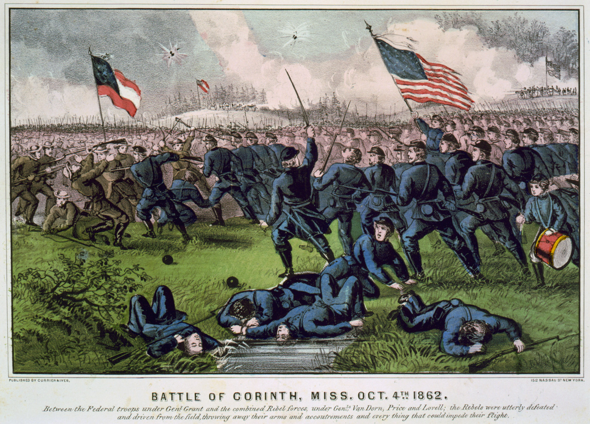
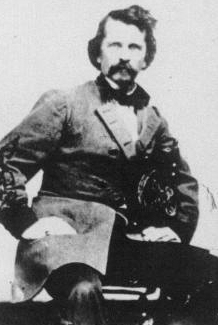

|
Determined to regain the ground lost during winter and
spring 1862, Confederate forces in the west embarked on a
late summer offensive designed to regain control of northern
Mississippi and Tennessee. General Braxton Bragg's Army of
|

An 1862 Currier & Ives print
of the Battle of Corinth.
|
the Mississippi and E. Kirby Smith's troops in
east-Tennessee constituted the primary offensive force.
Together, they launched an invasion of middle Tennessee and
central and eastern Kentucky. Bragg, whose army, previous to
taking the offensive, had protected Mississippi, left behind
two small forces of 16,000 men each under Earl Van Dorn and
Sterling Price. Strategically, these forces were to support
Bragg's invasion by either moving into middle Tennessee,
threatening Corinth (the site of a major railroad junction),
thus preventing Grant from sending troops to counter the
main Confederate offensive; or, in the case that Grant
diminished his force by sending re-enforcements to counter
Bragg, attack Corinth.
By early August it was clear that Grant had sent troops
toward Nashville weakening his hold on northern Mississippi.
Price called on Van Dorn, who had been operating against
Baton Rouge, Louisiana, to move north and unite in an effort
to either move into middle Tennessee or capture Corinth.
Not until late August did Van Dorn agree to cooperate with
Price. Van Dorn moved slowly toward Price's army and by
mid-September had not yet joined it. Frustrated by the
delays, Price moved alone and captured the town of Iuka
September 14. A column under William Starke Rosecrans
struck Price on the 19th in a fiercely contested battle.
Price abandoned the town on the 20th and with it any hope of
moving into Tennessee. On the 28th Price's army arrived at
Ripley where he united with Van Dorn who assumed command of
|

Confederate general Earl Van Dorn was murdered shortly after losing the
Battle of Corinth. He was shot by a Southern doctor who claimed--probably correctly--that
his wife was having an affair with Van Dorn.
|
the united armies. A thrust at Corinth was quickly planned
and the small rebel army of just over 20,000 moved rapidly
to the northwest of the town. Union troops under Rosecrans
were prepared for the attack and had created a series of
light defensive earthworks designed to maximize the
defensive capabilities of his 22,000 men. On the morning of
October 3, Van Dorn launched his attack. Although
successful in his drive against the Federal pickets, hot
weather, rugged terrain, and stubborn fighting on the part
of Union troops limited rebel gains. At 9:00 a. m. October
4, the Confederates attacked the Federal line. Described as
"irregular" by one Federal officer and containing a gap of
nearly 500 yards in its center, the defense seemed to be
imperfect. Advancing Confederates, however, were met with
converging fire from northern artillery and infantry. While
bravely executed, the southern attacks (which in some
isolated spots broke through into the town itself) were
uncoordinated and lacked sufficient weight in any one place
to make an effective breakthrough.
Federal victory resulted from a combination of poorly
orchestrated rebel attacks, a well conceived series of
defensive works, the steadfastness of the Union infantry,
and the terrible effectiveness of the Yankee artillery. The
Confederates left on October 5, unable to achieve either
their tactical or strategic goals. Losses on the
Confederate side included 505 killed, 2,150 wounded, 2,183
missing. The Federals counted 355 killed, 1,841 wounded,
and 324 missing.
Source: Joan Waugh, ed., Facts on File Encyclopedia of American
History: Civil War and Reconstruction, 1856 to 1869 (New York: Facts on
File, 2003), 83.
|